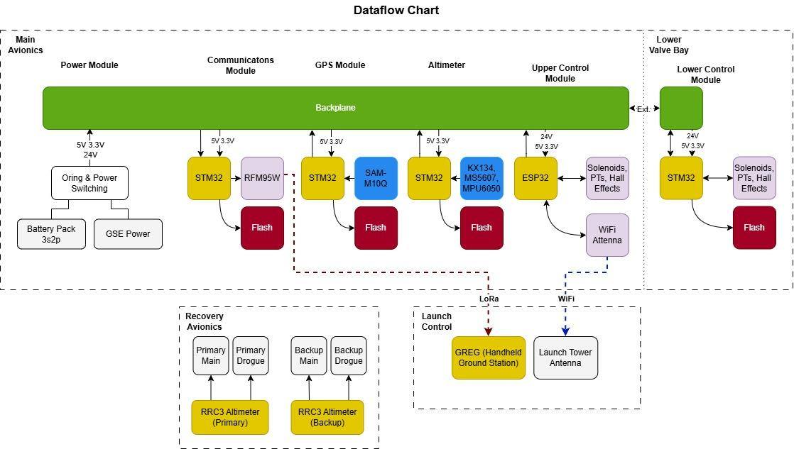
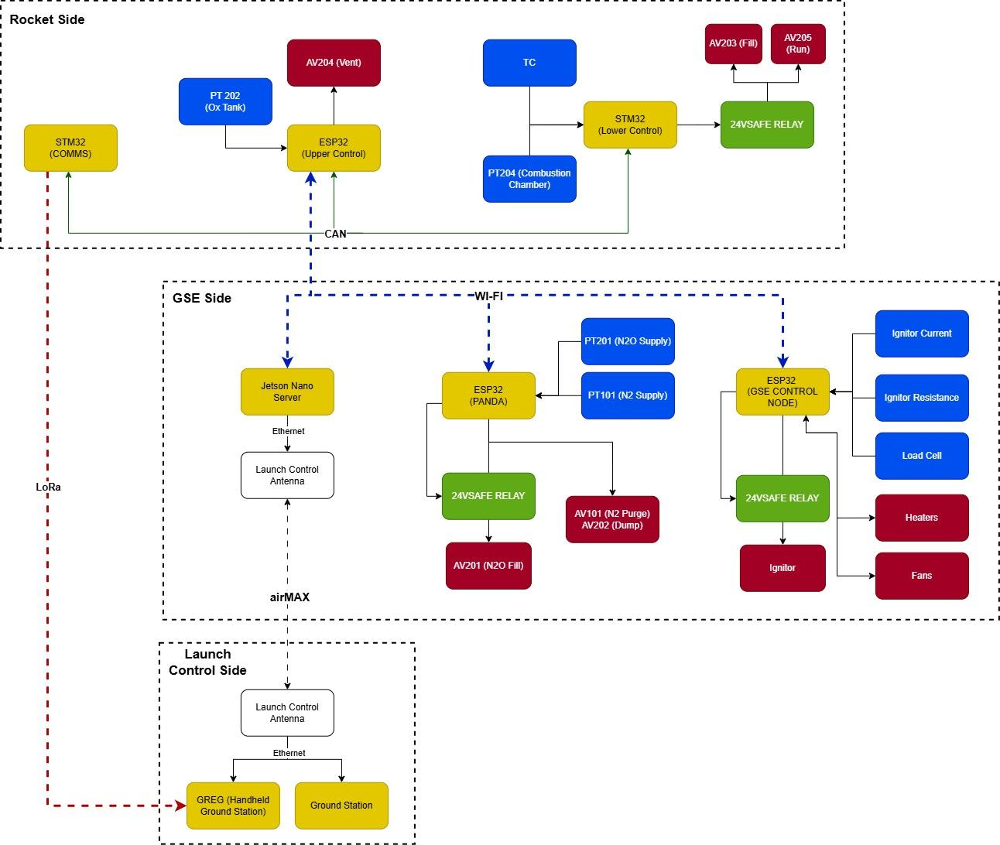
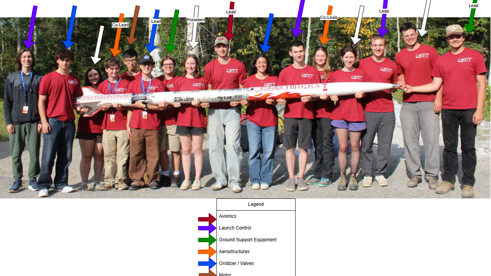
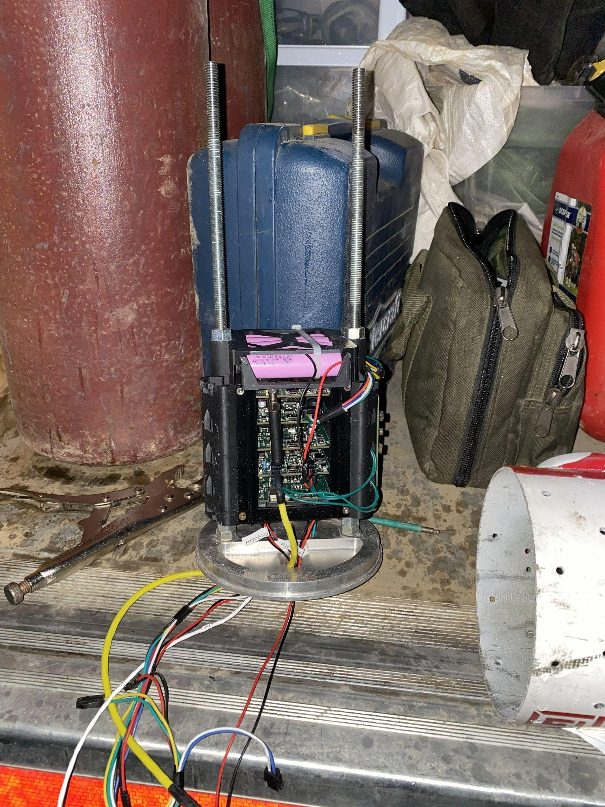
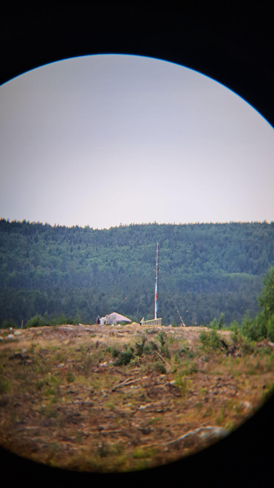
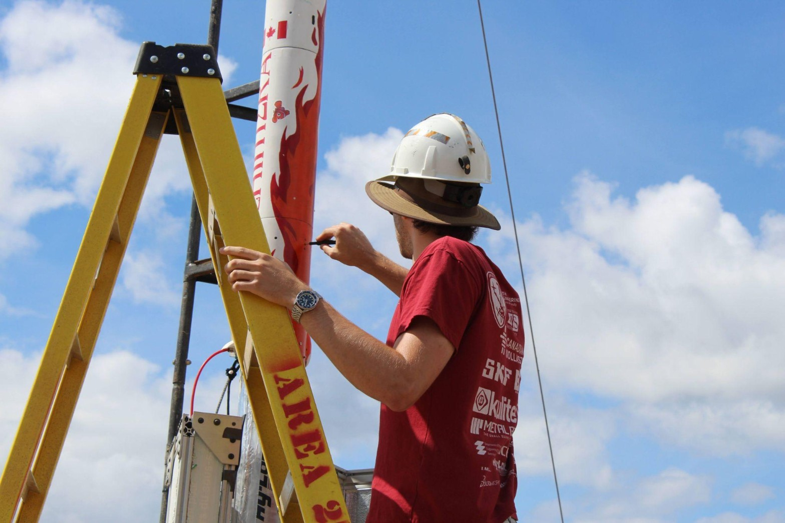

Project
QRET Avionics
A distributed control network for a hybrid rocket engine - STM32 valve nodes, ESP32 telemetry, shared firmware, and the boards they run on.
The Journey
-
Oct 2023
Joined QRET as an AI engineer and avionics developer. First board: the SAM-M10Q GPS module.
-
May 2024
Evertz co-op - embedded software intern through Aug 2025.
-
Jun 2024
Spaceport America Cup - we drove across the US to launch in New Mexico.
-
Aug 2024
Launch Canada - Sunflower tracker, 2nd place.
-
May 2025
Avionics lead - five-person team.
-
Jun 2026
AIM Network v0.6 - 29-bit CAN protocol on every node, v0.7 in July.
-
Aug 2026
Launch Canada - pad build, launch week, one field fix.
The Problem
You have STM32 nodes spread around a rocket and an ESP32 handling comms. They need to share data, log events, and save telemetry to flash. If every developer writes their own CAN implementation from scratch, you end up with incompatible packet formats, timing bugs, and dropped messages. Network code is the last thing you want to be debugging when you're supposed to be reading a pressure sensor or firing an actuator.
What I built
The team's shared foundation is av-libraries: a logger, flash storage on LittleFS, RDES3
telemetry compression, and at the core, AimNetwork. In 2026 I rebuilt AimNetwork twice. The
first version locked down origin, destination, and packet type.
By v0.6 I threw the destination field out. The 29-bit ID is now class, subject, source: class sets bus
priority, subject says what the data is, and consumers filter on that. Every frame carries its
sender's bits, so no two nodes can ever transmit the same ID.
The STM32 core skips Arduino libraries and drives the bxCAN HAL directly - no dynamic memory, fixed 16-frame TX and RX queues, and at most 8 RX polls per cycle so a flooded bus can't hang a node. The ESP32 side uses TWAI behind the same interface. v0.7.0 migration (July 2026)
The day before pad build, I cut features instead of adding them. Runtime rate switching went away in favour of fixed-rate jobs, diagnostic logging that ran inside the CAN TX interrupt got reverted, every node armed a 10-second watchdog after init, and the pad builds dropped to INFO-only logs.
Built with the QRET avionics team.
Launch pad triage
Day 4 at Launch Canada. Fill valve stopped responding. Last-minute firmware commit broke the command handler. Two launch opportunities left. Drilled through the airframe, reflashed the node, verified the fix in under an hour. Owning the mistake kept the mission alive.
The subsystems


- GPS Recovery - SAM-M10Q receiver and 3D flash logging. A month before launch I caught the receiver padding its I2C stream with 0xFF bytes and feeding them to the NMEA parser. Details
- Power Module - 24V battery with ORed ground power, buck to 3.3V and 5V, and a zener shunt that overheated on the bench from a missing current-limiting resistor. Details
- Propulsion Control - ESP32 upper and STM32 lower valve control. Lose CAN or WiFi for 5 minutes and the nodes safe the valves, then the power FETs. Details
- Telemetry - LoRa at 904.5 MHz, 250 kHz / SF8, fixed 13-byte fast and 5-byte slow frames down to the ground station. Details
- Altimeter - KX134 high-g accelerometer on a 100 Hz fixed-rate job.
Media




Repositories
- av-libraries - shared firmware
- av-prop - valve control
- av-power - power module
- av-recovery - GPS and altimeter
- av-telemetry - LoRa and ground station